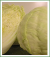

Yritys

Euran Vihanneskeskus Oy on vuonna 1993 perustettu viljelijöiden omistama vihannestukkuliike, joka
markkinoi
keskitetysti alueensa viljelijöiden tuottamia vihanneksia ja juureksia. Asiakkaitamme ovat tukkuliikkeet
kaikkialla Suomessa.
Tuotteet

Markkinoimamme tuotteet viljellään suomalaisilla perheviljelmillä, jotka sijaitsevat pääosin
Satakunnassa ja
Varsinais-Suomessa.
Tuoteturvallisuus

Tavoitteenamme on toimittaa asiakkaillemme vihannekset ja juurekset tuoreina, raikkaina ja puhtaina
mahdollisimman nopeasti pellolta kuluttajien pöytään.
Yhteystiedot

Tarjoamme asiakkaillemme sekä kattavan valikoiman kausituotteita että vakaat toimitukset kotimaisista
varastojuureksista ja -vihanneksista.